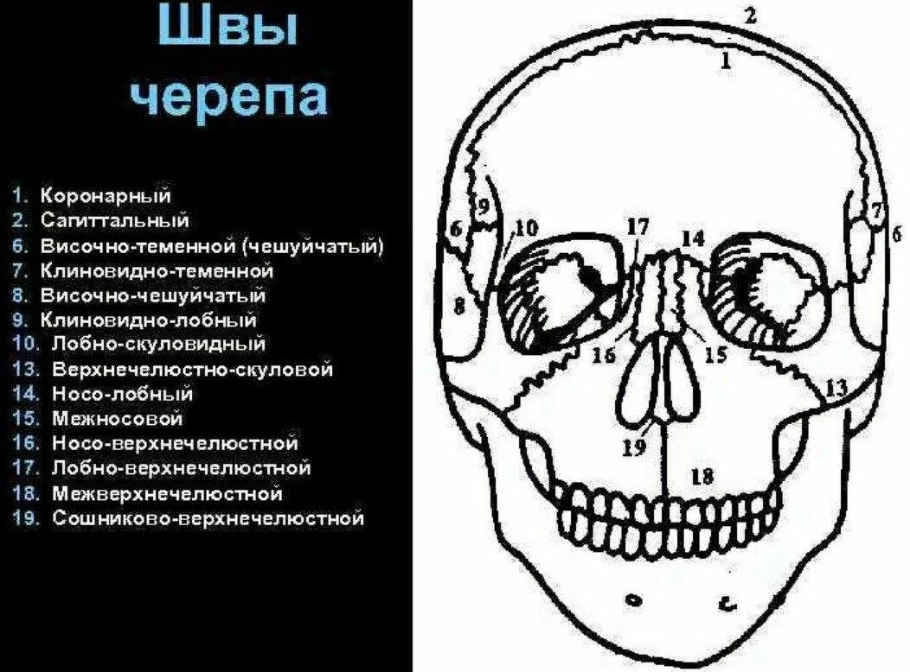

Урок 12.Расширяем лоб и межбровную область
Межбровные морщины тема непростая, они бывают двух видов:
1.Мимические
вызваны активной мимикой, легко исправляются массажами, контролем мимики и ботоксом. Выглядят как тонкие локальные заломы на относительно гладком лбу.
2.Напряженные
Это более тяжелый случай. Часто выглядят буграми, могут быть вообще без заломов, но стягивают весь лоб волнами к центру. Их обладатели могут вообще мало выражать эмоции и никогда не хмуриться... Вызваны постоянно присутствующим напряжением костей черепа.
Причины - психоэмоциональные паттерны: постоянное недовольство, хроническое напряжение, повышенная тревожность, проблемы с тазом или затылком, а чаще вообще все вместе. И вот в этом случае хорошо помогают приемы на расслабление костей в области переносицы.
Мой лоб до мьюинга:
После трех месяцев работы с костями
Итак, в сегодняшнем этом уроке мы будем учиться снимать напряжение с переносицы и лобных костей, что поможет разгладить лоб и избавиться от межбровных морщин, вызванных костным напряжением.

Упражнения
Все интераральные приемы начинаем с прохождения и расслабления срединного нёбного шва.
1. Дышим костями черепа: надо расшевелить лобную кость и носо-лобный шов. Ладонь одной руки кладем на лоб, большой палец другой во рту - на высшей точке свода неба, а средний придерживает спинку носа. На вдохе разводим лоб и нос друг от друга - ладонью мягко двигаем лоб вверх , второй рукой изнутри чуть оттягиваем верхнюю челюсть за нос вниз), на выдохе наоборот сближаем лобную кость и максиллу, прижимая их друг к другу. Дышим так 5 - 7 раз.
2. Поднимаем решетчатую кость и расправляем центр лица по вертикальной оси. Большой палец там же, на самой высокой точке свода неба, а указательный или средний пальцы второй руки - ставим на носо-лобный шов. В этом месте (в глубине черепа на уровне переносицы) у нас находится решетчатая кость, правильное положение которой влияет на эстетику глаз и межбровья). На вдохе поддавливаем изнутри небо, а второй рукой двигаем лобную кость вверх, на выдохе удерживаем это положение, не ослабляя нажим.
3. Расслабляем и расширяем межбровную область: большой палец одной руки там же на нёбе, пальцы другой руки теперь чуть выше от носо-лобного шва. На вдохе надавливаем изнутри на свод неба и одновременно двигаем лобную кость в сторону от центрального метопического шва - сначала в одну сторону 3 - 5 раз, потом (удобно поменять руки) в другую. На вдохе раздвигаем, на выдохе удерживаем это положение - так снимаются блоки со швов. На видео, возможно, кажется, что я двигаю кожу, по это не так, упираюсь именно в метопический шов и раздвигаю его.
4. Другой вариант этого же приема, если вы уже достаточно натренировали язык и умеете работать им до ощущения распирания в переносице: с силой упираемся концом языка глубоко в центр нёба, а указательный пальцы обеих рук ставим крючками на область межбровки по обе стороны от метопического шва. На вдохе оказываем изнутри давление языком, а пальцы в это время мягко, но плотно разводят лобные кости в сторону. На выдохе удерживаемых положение.
Важный момент!
Если у вас продолжает напрягаться затылок (а это верный путь к спазму межбровной области, то
предлагаю следующий простой, но очень эффективный прием на расслабление затылка и межбровных морщин. На фото
типичный пример спазма межбровки, вызванного напряжением затылка.